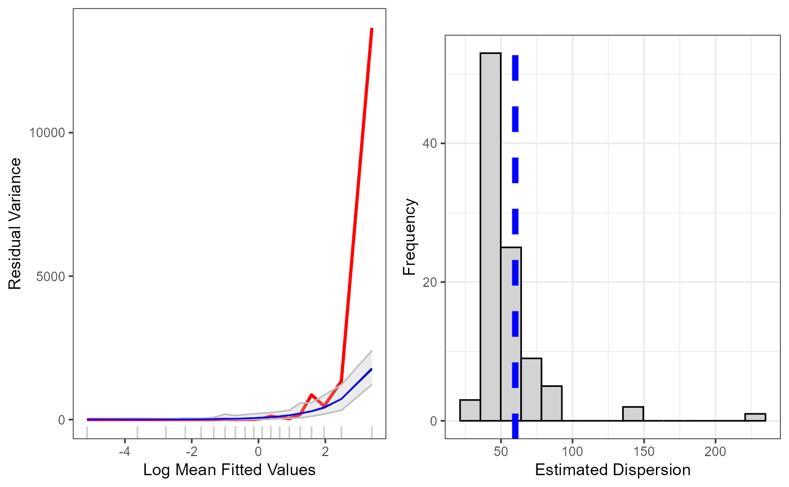

Plotting function to assess the mean-variance relationship of generated data
plotVariance.RdPlotting function to assess the mean-variance relationship of generated data
Usage
plotVariance(
model,
simdat,
cuts = 20,
quants = c(0.025, 0.975),
n.sim = NULL,
store.data = FALSE
)Arguments
- model
model object of class glm, gam or gamMRSea
- simdat
matrix of simulated response data. Each column is a new simulated data set
- cuts
The number of cut points for calculation of residual variance
- quants
vector of length 2 stating the quantiles for the confidence interval bands for the simulated mean-variance relationship
- n.sim
(default = NULL) denotes how many simulations from
simdatto use. IfNULLthen all are used.- store.data
Logical indicating whether or not to return the plotting data. Default is FALSE (no data stored).
Examples
data(nystedA_slim)
initialModel<-MRSea::gamMRSea(response ~ 1 + as.factor(yearmonth)+depth +
x.pos + y.pos + offset(log(area)), data=nysted,
family=quasipoisson)
nsim<-550
d<-as.numeric(summary(initialModel)$dispersion)
newdat<-generateNoise(nsim, fitted(initialModel), family='poisson', d=d)
plotVariance(initialModel, newdat)
#> Warning: Simulations: 2 removed from plotting owing to extra ordinary values. The vector of ID's has been put in the workspace: badsim.id
#> Warning: The `<scale>` argument of `guides()` cannot be `FALSE`. Use "none" instead as
#> of ggplot2 3.3.4.
#> ℹ The deprecated feature was likely used in the MRSeaPower package.
#> Please report the issue to the authors.
